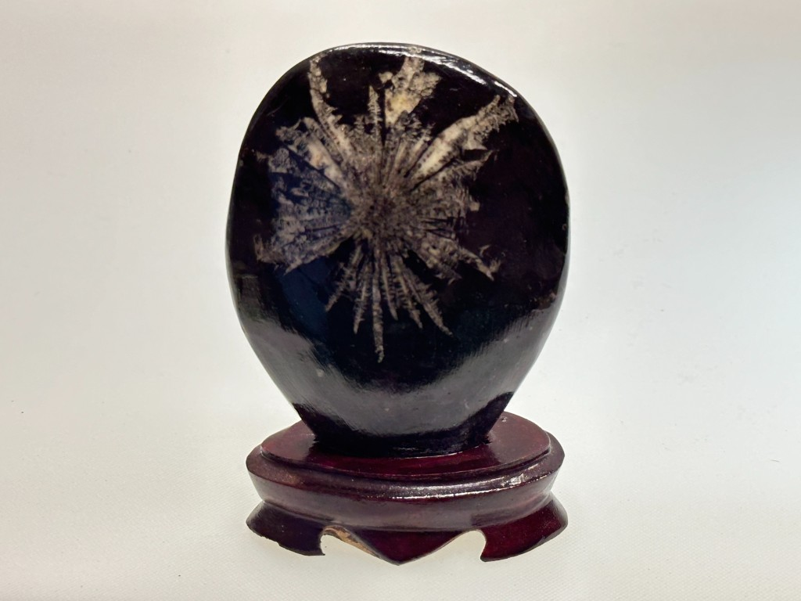
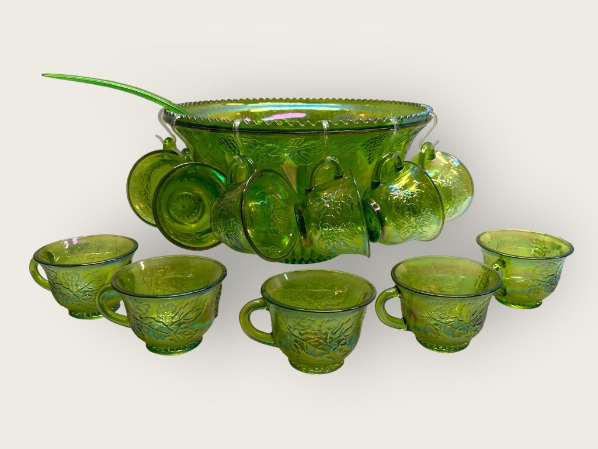
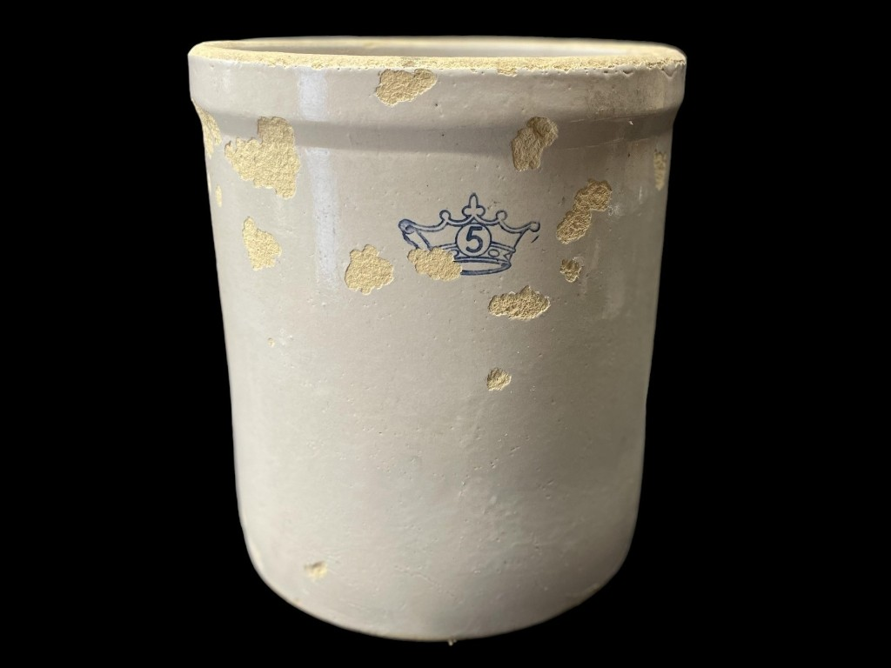
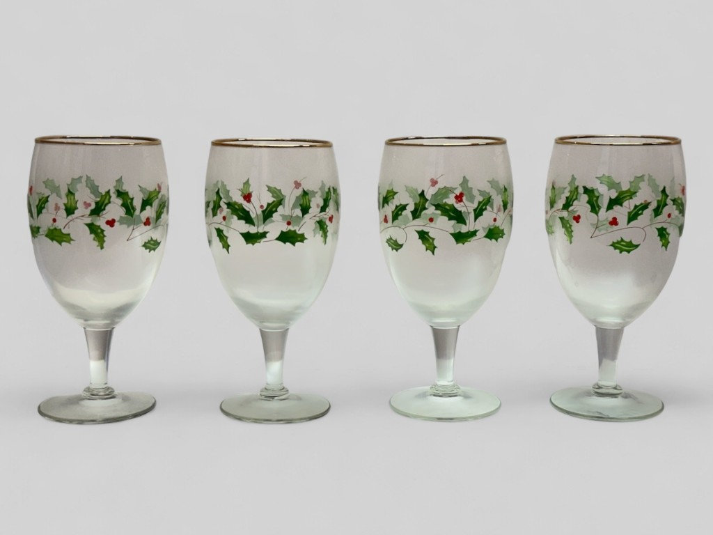
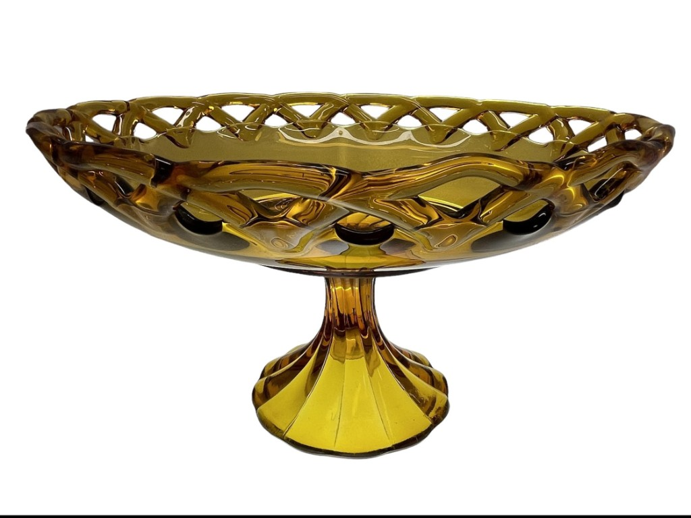

Auctologue

The World’s First Research-Based Auction Cataloging Suite
Features
Research. Speed. Accuracy.
- Research-Grounded Accuracy: Auctologue is not an AI description generator, it actually identifies items via precise database lookups and grounded research, achieving an unparalleled accuracy rate.
- Integrated Image Processing: Paying customers receive unlimited image processing, including automatic background removal and precision object centering, for a professional gallery aesthetic.
- Photos Only, Zero Keyword Input: Simply upload your images and our system identifies and catalogs every item automatically with no keywords or description typing required.
- Superior Processing Speed: Our custom workflow processes thousands of lots per hour, more than 10x the speed of the leading competitor, drastically reducing the time from asset intake to a completed catalog.
The Auctologue Difference
| Image | Generic AI Description | Auctologue |
|---|---|---|
| 33 Vintage Stemware with Silver Rims | Lenox Montclair Platinum Rim Crystal Stemware Collection | |
|
 |
Polished Fossil Stone With Stand | Polished Chrysanthemum Stone On Carved Wood Base |
|
 |
Iridescent Green Glass Punch Bowl Set with Cups and Ladle | Indiana Glass Harvest Grape Iridescent Lime Carnival Glass Punch Set |
|
 |
Stoneware Crock with Crown '5' Mark | Antique Robinson Ransbottom Blue Crown 5 Gallon Stoneware Crock |
|
 |
Four Hand-Painted Holiday Wine Glasses | Lenox Holiday Dimension 14 Ounce Iced Tea Glasses Set |
|
 |
Amber Glass Pedestal Compote Bowl with Openwork Edge | Imperial Glass Amber Lacy Edge Pedestal Fruit Bowl |
Watch
See Auctologue in action.
From the Auction Tent to the Tech Stack.

Amberleigh Scheungrab Wankel was raised in the world of antiques, the daughter of a dedicated collector and antiques dealer, trailing her mother through estate sales and auction houses before she could even drive. Her professional foundation was built in the trenches of old-timey live auctions, learning the rhythm of the trade under the legendary Buddy Updike.
After honing her skills at Nashville Auction School, Amberleigh proved her command of the gavel and made history by becoming the 2006 Virginia Auctioneer Champion, the first woman ever to hold the title. This mastery in the ring taught her a vital lesson: a catalog is a financial instrument. She recognized early that substandard cataloging is a silent thief; even a 5% yield loss from vague descriptions compounds into a massive deficit over a career. To Amberleigh, accuracy is a mandate for profitability.
By merging a lifetime of auction expertise with modern tech, she combined her love for process-driven logic and “upcycled” innovation as the Founding Visionary and core idea architect of Kõik LLC, a company with a mission to help people manage the overwhelming burden of “everything.” She now maintains a passive role in daily operations leveraging her technical training to ensure technology continues to grow the mission.
To bridge the gap between traditional expertise and modern scale, Amberleigh earned her Bachelor of Science in Software Development and Entrepreneurship from the Estonian Entrepreneurship University of Applied Sciences (Mainor). Today, she leads Auctologue, advancing the bridge between traditional care and digital efficiency.

Auctologue is a proud company dedicated to logic, organizational efficiency, and the circular economy.